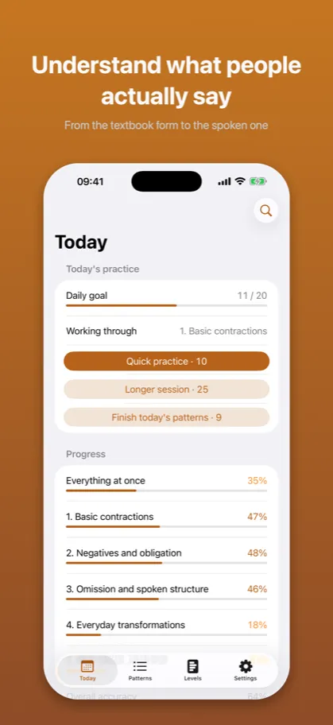
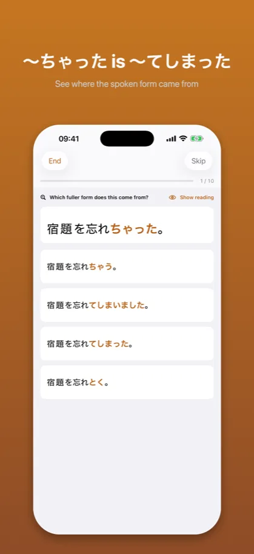
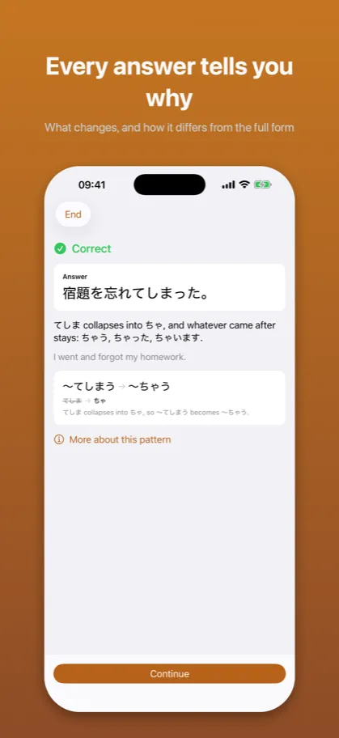

Kuzushi: Casual Japanese崩し
Anime, drama and slang
App Store →Free app with an in-app purchase
Textbooks teach 〜ている. People say 〜てる. Kuzushi drills that gap: recognising a contraction and producing one are scored apart, because they are two different skills.
What it looks like

From the textbook form to the spoken one

See where the spoken form came from

What changes, and how it differs from the full form
Description from the store
Textbooks teach 〜ている and 〜てしまう. People say 〜てる and 〜ちゃった.
That gap is what Kuzushi trains. Not grammar you have never met – grammar you already learned, in the shape it actually arrives in when someone talks to you.
WHAT IT DRILLS
Every pattern is scored separately for five things, because they are five different skills:
- Recognize – you hear 食べちゃった, you map it back to 食べてしまった
- Shorten – you know the full form, you produce the spoken one
- Meaning – what the pattern actually does to the sentence
- Register – the same situation, two correct forms, and who you are talking to decides
- Take apart – several changes in one sentence, undone step by step
Being able to recognize a shortened form is not the same as being able to produce it. The app counts them apart and asks about whichever is behind.
FIVE LEVELS, NOT JLPT
Shortenings do not belong to exam levels – you hear them in the first minute of any conversation. The levels here go from one change per sentence to several at once.
CASUAL IS NOT RUDE
Register questions show a situation and two forms that are both correct Japanese. Sometimes the right answer is the polite one. The app teaches when, not just how.
HOW IT WORKS
A pattern you have never met is explained before it is asked about – what changes, why, and one sentence showing it. New material arrives at a pace you set.
NO ACCOUNT, NO NETWORK
Everything is on the device. No sign-up, no tracking, no data collected. Levels 1 and 2 are free; one purchase opens the rest, for good.
The description above is the same text that stands on the App Store product page – it comes from the same file.
Common questions
What does Kuzushi teach?
Textbooks teach 〜ている and 〜てしまう. People say 〜てる and 〜ちゃった.
That gap is what Kuzushi trains. Not grammar you have never met – grammar you already learned, in the shape it actually arrives in when someone talks to you.
Does it work without an account or a network?
Everything is on the device. No sign-up, no tracking, no data collected. Levels 1 and 2 are free; one purchase opens the rest, for good.
Documents
The other apps
- Kaname: Japanese Grammar — JLPT practice: N5 N4 N3 N2 N1
- Bunmyaku: Japanese Reading — Vocabulary, kanji, furigana
- Katsuyokei: Conjugation — Verbs, adjectives and drills
- Joshi: Japanese Particles — Grammar drills for the JLPT
- Kazoekata: Japanese Counters — Counting, kanji and drills
- Shindan: Japanese Level Test — JLPT placement: N5 N4 N3 N2 N1
- Keigo: Polite Japanese — Formal Japanese for work
- Kifuku: Japanese Pitch Accent — Pronunciation and listening
- Onomatope: Japanese Mimetics — Manga and anime vocabulary